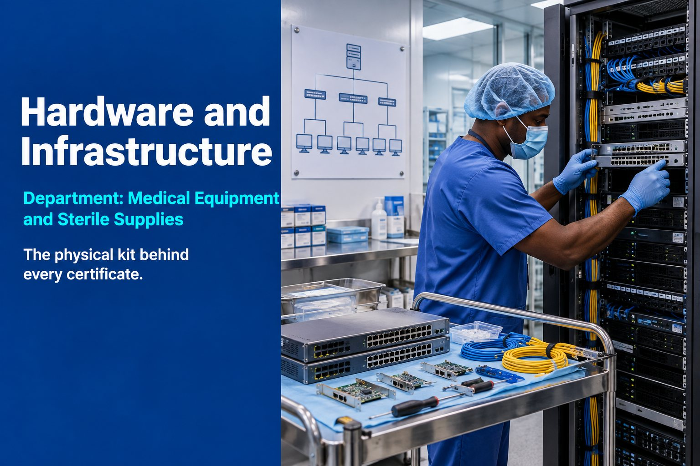

Asset Documentation
A hardware estate and network topology diagram that matches reality.

Department: Medical Equipment and Sterile Supplies
Every certification claim about secure, controlled systems rests on physical hardware. It's what your MSP manages day to day and what a Cyber Essentials assessor actually inspects.
Without documented hardware and infrastructure management, a buyer assumes undocumented, inconsistent network configuration, ageing or unsupported equipment as a security gap, no clear record of what's connected to the network, risk in how old devices and data are disposed of and infrastructure claims in certifications that don't match reality.
None of that may be true of you. It does not matter. In an audit, the assumption is what gets tested.
Most manufacturers can describe their IT setup from memory. Almost none can produce an asset register that matches it, and that is exactly what an auditor asks to see.
Hardware is not a procurement decision. For tender purposes, it's documented evidence behind everything else you claim.
A hardware estate and network topology diagram that matches reality.
Firewalls, switches and access points configured to Cyber Essentials standards.
Replacement planning and certified data destruction for end-of-life devices.
Server room security and power resilience for critical infrastructure.
| Tender criterion | What this service contributes | Score effect |
|---|---|---|
| Compliance | Underpins Cyber Essentials secure configuration evidence | Moderate |
| Risk | Poor asset management reads as operational risk | Moderate |
| Quality | Documented asset register supports process maturity | Moderate |
| Operational Resilience | Reliable infrastructure supports uninterrupted delivery | Moderate |
| Cyber | Physical layer behind every cyber control claim | Minor |
An asset register lists every device you own: what it is, who uses it, where it is, what it runs and whether it is still supported. Auditors ask for it because you cannot claim control over systems you cannot list. For Cyber Essentials, it is how you show what is in scope.
Through a certified data destruction service that gives you a certificate of destruction for each device. Under UK GDPR you remain responsible for personal data on old drives, and the certificate is the evidence an auditor or buyer will ask to see.
Yes, if it is in scope. Devices, firmware and software that no longer receive security updates must be replaced, upgraded or removed from scope. That includes routers, firewalls and network switches, not just laptops, which is why a replacement plan matters.
Sources: Cyber Essentials overview (NCSC)
Reviewed by Rob Atkins, Founder & Principal Consultant, Your Best Solution Limited. Last updated .